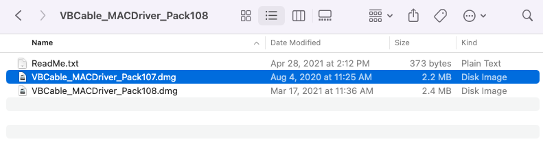

Step 1: Go here and download the mac version of VB-CABLE.
Step 2: Open your downloads folder and double click on the file you just downloaded.

Step 3: When this window opens, double click on the box image and follow the installation prompts.
Step 4: Open your streaming app and start the music.
Step 5: Open your System Preferences and then open the Sound options.
Step 6: Click on Output and then select VB-Cable from the list. You should stop
hearing your music but fear not - This is expected.
Important note: Come back here and set output back to your speakers when you're done playing!
Step 7: Click on Input and then select VB-Cable from the list.
Important note: Come back here and set input back to your microphone when you're done playing!
Step 8: Click Start listener below and give your browser microphone permission. You should see the
equalizer come to life - this means the listener hears your music.
Step 9: Click Connect. A unique stream id will be generated. Enter the stream id in your game.
Once the game connects, you should start hearing music within 30 seconds. Note: there will
be a delay of 15-30 seconds between what is output from your streaming
service and what you hear in the game.
Streaming should take less than five minutes to set up.